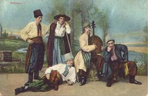
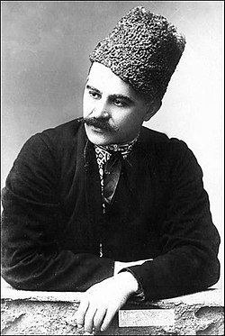
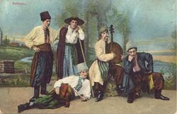
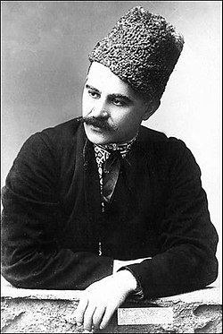

Гнат Хоткевич
1877-1938

Гнат Мартинович Хоткевич (псевдонім — Гнат Галайда) — унікальна постать в українській культурі. Його часто називають «українським Леонардо да Вінчі» за неймовірну різнобічність талантів: письменник, історик, бандурист, композитор, мистецтвознавець, етнограф, педагог, театральний діяч, інженер.
Народився 31 грудня 1877 року в Харкові. Закінчив Харківський технологічний інститут, працював інженером на залізниці, розробив власний проєкт дизельного поїзда. Але справжнім його покликанням було мистецтво. Він віртуозно грав на бандурі, заснував Харківську школу гри на цьому інструменті, написав підручник гри на бандурі.
Як письменник, Хоткевич залишив багату спадщину: оповідання, повісті (найвідоміша — «Камінна душа» та незакінчена тетралогія про Довбуша), драми. Він організовував робітничий театр, гастролював із ним по Україні.
На жаль, життя Гната Хоткевича обірвалося трагічно. Він став жертвою сталінських репресій і був розстріляний 8 жовтня 1938 року. Його ім'я довго було під забороною, але нині повернулося із забуття як символ незламного українського духу та геніальності.
Відомі твори:
«Грузинка», «Блудний син», «Різдвяний вечір», «Життєві аналогії», збірник «Гірські акварелі», «Гуцульські картинки», «Авірон», «Берестечко»
Фотогалерея
 


